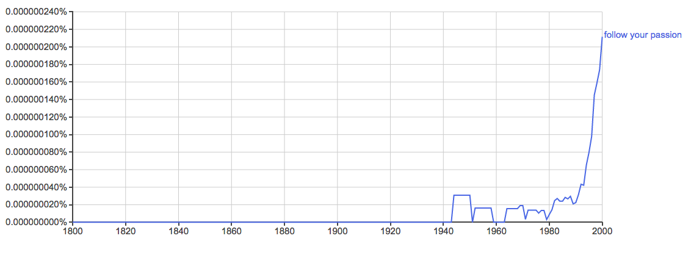

Follow your passion or don't
I was at a job fair speaking to a recruiter for Comrizon. She said she was looking for people who are passionate about what they do. I think by this she meant people who like what they do and are always happy to get up and go to work. What employer wouldn't want that? I asked her if she was passionate about recruiting. She said yes.
Still, I have trouble imagining someone being passionate about recruiting white collar talent for a cable and phone company. I've never read a poem or heard a song or seen a painting that was birthed by the passion of a recruiter. I told the woman that I just wanted to earn a living and be good at my job, passion was too strong a word to describe that. I've been told again and again to "follow my passion." And even after I assure someone that my passions will leave me broke I still have it shoved down my throat that "you must follow your passion."
The five syllable phrase follow your passion is just a slogan. I have no idea where it came from or why it became popular. I used google's Ngram viewer to chart when the slogan became popular in english language books. The result was surprising. 
Sometime around 1990 the phrase exploded. There was some bubbling for 50 years and then a rocket like take off. It appears that the phrase "follow your dreams" was more popular and took off in a similar manner a decade earlier. Though I don't know why either phrase had this exponential growth. Now I have to hear the dumb phrases repeated again and again. If someone tells you to follow your passion please interrogate them. Find out what they actually mean. I think they mean 'do what you love.' But not everyone can do that. How many artists and musicians are bursting with talent but work at a star bucks? I would like to see a survey done on this.
Passions are strong and barely controllable emotions, according to the Oxford English dictionary. It has been my experience that employers generally hate strong and barely controllable emotions in their employees. For those of us who follow this advice what are we to do when we follow are passions but are passions do not follow us? Who among us hasn't loved someone and not been loved back? What are those with unrequited passion to do?
If the intent of "follow your passion" or the similar "follow your dreams" is to help people avoid miserable work, it has failed. It fails in the fact that it tortures the minds of those of us who are not able to make our passions marketable and thus not able to make a living from it. We who work hard and well in our fields of dispassion, rage against ourselves at night for not having followed our "passion" or "dreams."
After thinking about that recruiter again it appears to me that she might genuinely be passionate about recruiting white collar talent for an oligopolistic company. Which I think is stupid. It is my prerogative to think someone else's taste is stupid. My point being that What is right for one person is not right for every person! Following your passion is something some people can do and something that some people cannot. It seems wrong to command anyone to follow their passions when all the market will offer them for it is destitution.